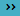
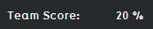
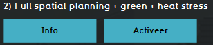
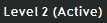

import logging; reload(logging) FORMAT=("%(asctime) -8s %(message) s") logging.basicConfig(format=FORMAT, filename="testLog.txt", level=logging.DEBUG) logging.info("[info] Admin waits for results and skips to LVL2...") if Settings.isLinux() or Settings.isWindows(): wait() click() click() click() #wait(30) click() click() #if exists(Pattern("Admin-CG5-Team1-ResultsScore-160428-VVD-0.1.png").exact(), 300): if exists(Pattern().exact(), 300): print"[info] Results from LVL1 are ready!" logging.info("[info] Results from LVL1 are ready!") else: print"[error] Results from LVL1 are NOT ready!" logging.error("[error] Results from LVL1 are NOT ready!") exit(1) click() wait() click() wait() click(Pattern().targetOffset(64,12)) if exists(): print"[success] level 2 has been activated!" logging.info("[success] level 2 has been activated!") else: print"[error] Level 2 has not been activated as expected!" logging.error("[error] Level 2 has not been activated as expected!") exit(1)